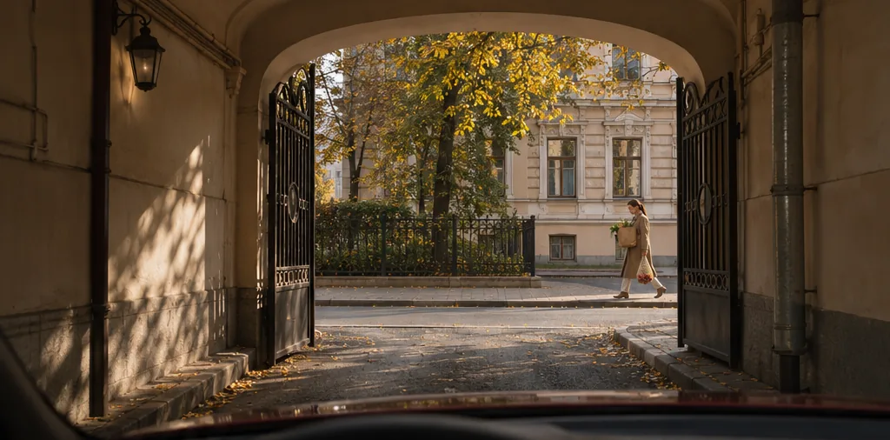
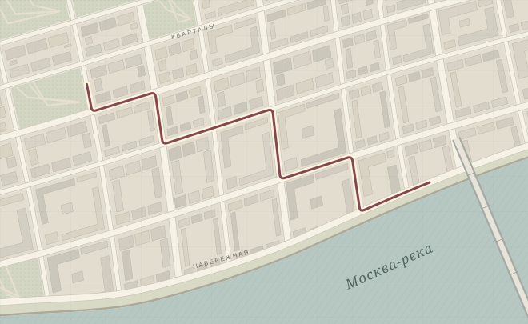
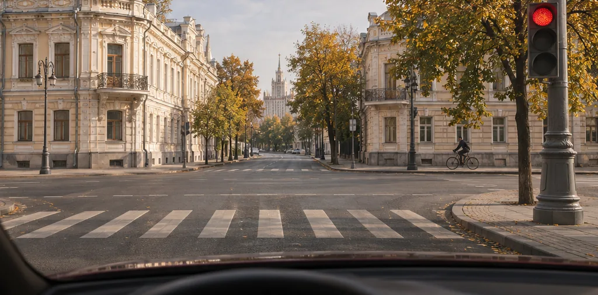
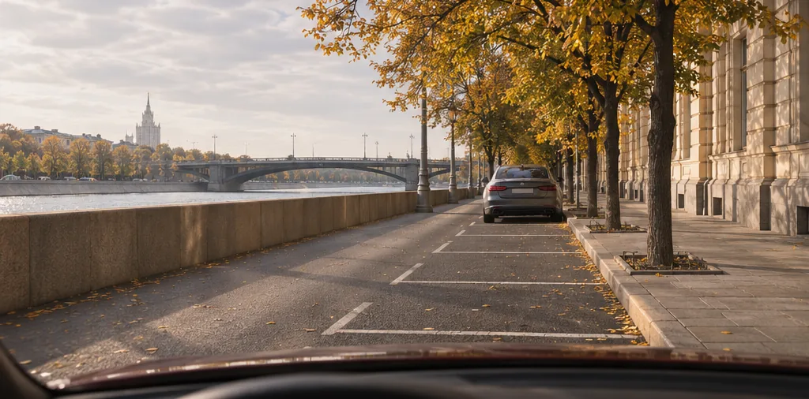
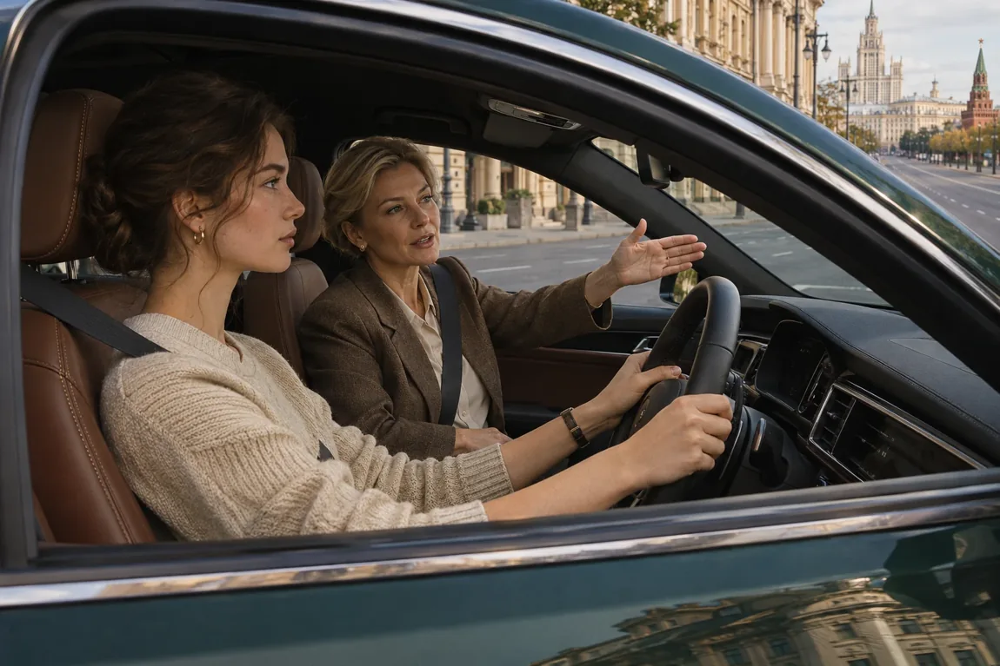

Остановка 01 / 03
Выезд со двора
«Что за этой аркой пока скрыто от нас? Где ты остановишься, чтобы увидеть тротуар?»
Частная автошкола / Москва
Индивидуальные занятия за рулём
на улицах Москвы.
Маршрут первого занятия
Выберите точку на карте, чтобы увидеть дорогу с места водителя и разобрать ситуацию вместе с инструктором.


Остановка 01 / 03
«Что за этой аркой пока скрыто от нас? Где ты остановишься, чтобы увидеть тротуар?»

Остановка 02 / 03
«Посмотри правее светофора. Кого легко упустить из виду, когда ждёшь зелёный?»

Остановка 03 / 03
«Как поймёшь, что места хватит? Выбери ориентир и проверь, что происходит вокруг машины».
Как бы вы поступили за рулём?
Пройти тестПрограммы обучения

Настроите посадку, почувствуете педаль тормоза и проедете свой первый поворот вместе с инструктором.

Почувствовать длину кузова, рассчитать место для разворота и спокойно припарковаться вдоль тротуара.

Освоиться в узком дворе, разъехаться со встречной машиной и заехать на место между двумя автомобилями.
Привыкнуть к высокой посадке, проверить обзор в зеркалах и выбрать положение в полосе перед поворотом.

Сначала устроимся за рулём. Вместе настроим зеркала, выберем спокойный выезд и договоримся, какой манёвр хочется освоить сегодня.
Обсудим опыт и выберем одну задачу на урок. Настроим кресло, руль и зеркала так, чтобы вам было удобно смотреть по сторонам.
Начнём с тихого участка. Потренируем начало движения, поворот и остановку. Каждый манёвр сначала обсудим, затем повторим в вашем темпе.
Вспомним один удачный манёвр и один сложный момент. Вместе решим, чему посвятить следующую поездку.